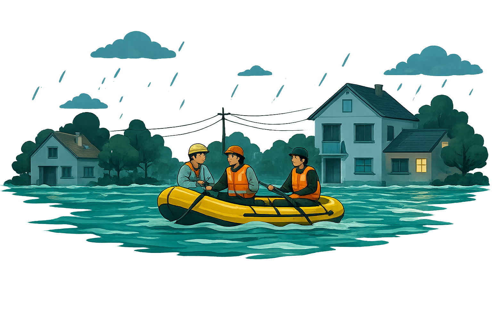
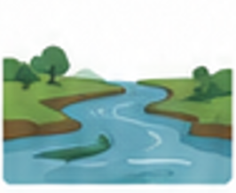

Informasi Banjir
Pahami banjir lebih dalam: penyebab,
dampak, dan wilayah rawan agar kita
bisa lebih siap dan waspada.

Pahami banjir lebih dalam: penyebab,
dampak, dan wilayah rawan agar kita
bisa lebih siap dan waspada.
Banjir adalah genangan air yang meluap ke daratan melebihi kapasitas tampung wilayah, akibat hujan ekstrem, luapan sungai, atau sistem drainase yang tidak memadai.
Hujan deras dalam waktu lama meningkatkan volume air yang meluap.
Saluran air yang tersumbat menghambat aliran dan menyebabkan genangan.
Sampah di saluran air menghalangi aliran dan memicu banjir.
Perubahan lahan hijau menjadi bangunan mengurangi daya serap air.

Sedimentasi di sungai mengurangi kapasitas menampung air.
Wilayah dengan elevasi rendah lebih mudah tergenang air.
Meningkatkan risiko penyakit seperti diare, ISPA, dan penyakit lain.
Kerusakan barang, terhentinya usaha, dan biaya perbaikan yang tinggi.
Kerusakan ekosistem, pencemaran air, dan berkurangnya kualitas lingkungan hidup.
Mengganggu aktivitas sehari-hari, perpindahan penduduk, dan trauma psikologis.
| Jenis Wilayah | Ciri-Ciri | Karakteristik Risiko |
|---|---|---|
|
Bantaran Sungai
|
Berada di tepi sungai atau aliran utama | Berisiko tinggi saat debit air meningkat atau terjadi hujan deras di hulu. |
|
Dataran Rendah
|
Wilayah dengan elevasi lebih rendah | Air sulit mengalir dan mudah tergenang saat hujan lebat atau pasang air. |
|
Kawasan Padat Penduduk
|
Pemukiman dengan kepadatan tinggi | Drainase sering tidak memadai, genangan cepat terjadi dan berdampak luas. |
|
Drainase Buruk
|
Saluran air sempit, rusak, atau tidak terawat | Air hujan tidak tersalurkan dengan baik, menyebabkan genangan dan banjir. |